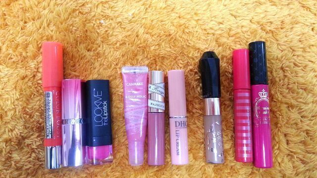
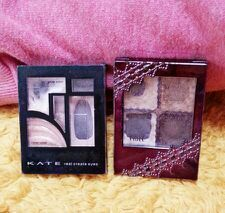

はろ〜ヾ(´▽｀*)ゝ こんにちわ。
Rottyだよ〜
コメントに『ろってぃーのメイク教えてほしいです！』
ってゆう質問があったから
今日は初めて ろってぃーのメイクについて
書きたいと思います(*ノ_ノ)
とりあえず、
まひろのメイクこんな感じねぇ〜ヾ(´▽｀*)ゝ
そう. こんな感じねぇ〜ヾ(´▽｀*)ゝ
メイクのやり方ね〜説明するほど
そんな細かいことはやってないんだよ〜*^^*
なんかねぇ、意外とナチュラル・ω・
目鼻立ちがはっきりしてるから
ちょっとやるだけで いっぱいやってるように
見られるけど (´；ω；｀)
アイラインも細〜く書いてるのに
「まひろ、アイライン濃くない？」って言われたりさ、、
あはは〜んヾ(´▽｀*)ゝ笑
めちゃ 細く書いてるちゅーねんっ。
とね、ろってぃー 何度も悩みましたよ
あみらにも
「まには、絶対マスカラしない方がいいよ！」って言われる *^^*
・・・・・・
チークも 頬っぺに『ポンッ』って
しっかり入れたり、口 赤目塗ったりするけど
ろってぃーの場合それやったら
すごい濃いメイクに見えちゃうから
口紅は、赤系は使わないよ♪自然なピンク系 、
もしくわ 自然なオレンジ系かな.\*^^*/
チークも あまり濃くないピンク使うよ.
ろってぃ-が使ってるメイク道具紹介すんねっ.

左から紹介していくね！
☆03 ブルジョワ カラー ブースト
(今日の写メはこれ使ってるよ^^)
☆308 メイビリン ウォーター シャイニー ダイヤモンドダイヤ
(最近はずっこれやったよ^^)
☆LML04 ルックミーリップスティック cotton candy
(これはあまり使わないかな^^)
￣￣￣￣￣￣￣￣￣￣￣￣￣￣￣￣￣￣
リップグロスもほんのりピンクが入ってる位かな？
もしくわ ベージュ系.
☆02 キャンメイク グロッシーホリックリップ
☆BE706 マジョリカ マジョリカ ルージュマジェキス
☆ ちなみに薬用リップは DHC...
￣￣￣￣￣￣￣￣￣￣￣￣￣￣￣￣￣
そして 眉マスカラは
☆03 アッシュブラウン キスミーヘビーローテーション
眉毛ももっと細くして薄くし!って言われちゃうから
ほとんど書かない様気を付けてるし
一番 薄いマスカラつかってます><
それで調度いい位なのっ *^^*
￣￣￣￣￣￣￣￣￣￣￣￣￣￣￣￣￣
最後に 右の２本紹介するね.
☆マスカラ下地 エテュセ ラッシュバージョンアップ
☆01 ヒロインメイクロング&カール (お気に入り^^)
￣￣￣￣￣￣￣￣￣￣￣￣￣￣￣￣￣

アイライン ・ アイブロウはKATEだよ /
アイシャドウは
★KATE リアルクリエイトアイズ BR-2
★VISEE グラムグローアイズ BR-3
は〜〜〜い )))
こんな感じかなぁ〜 //
ってことで Rottyのメイク道具紹介でした〜
何か 女の子たち〜 これいいよ〜♪
ってゆう メイク用品あるう？
是非教えてほちいなん ´▽`/
ではではっ、今日も明日も明るく
頑張ってくださいねっ
ろってぃーより
まったねー ☆ のし